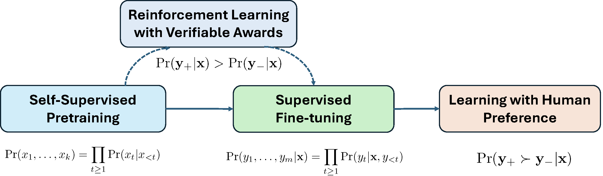
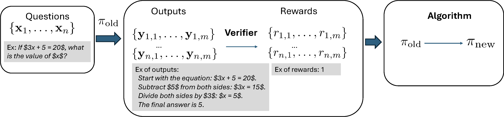
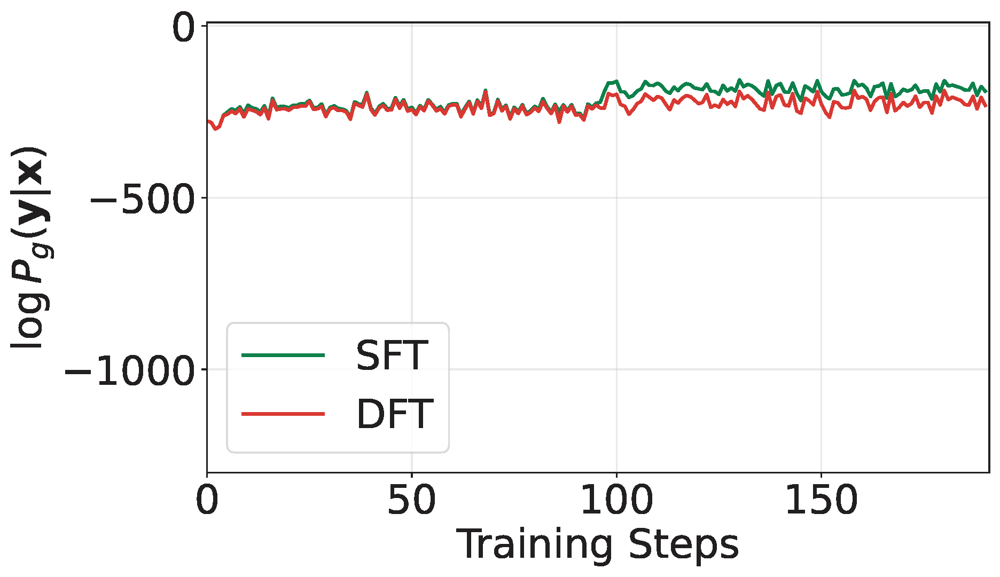
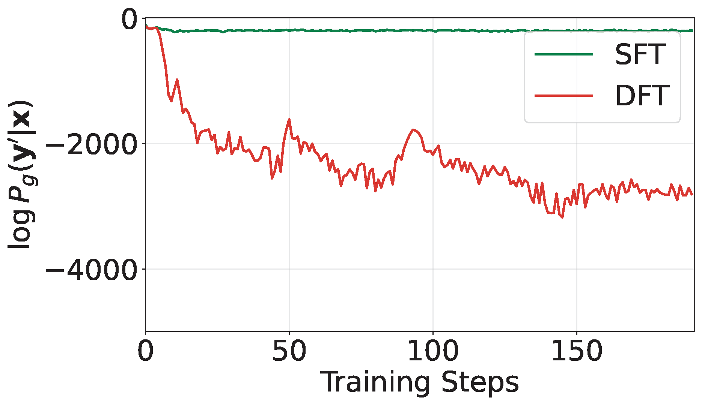
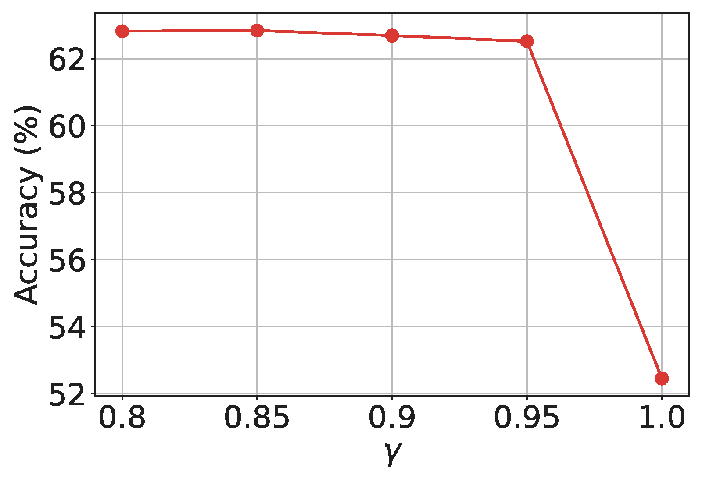
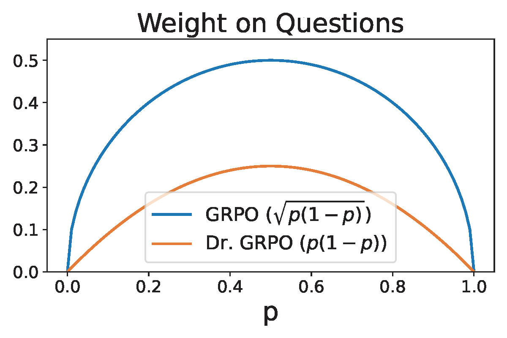
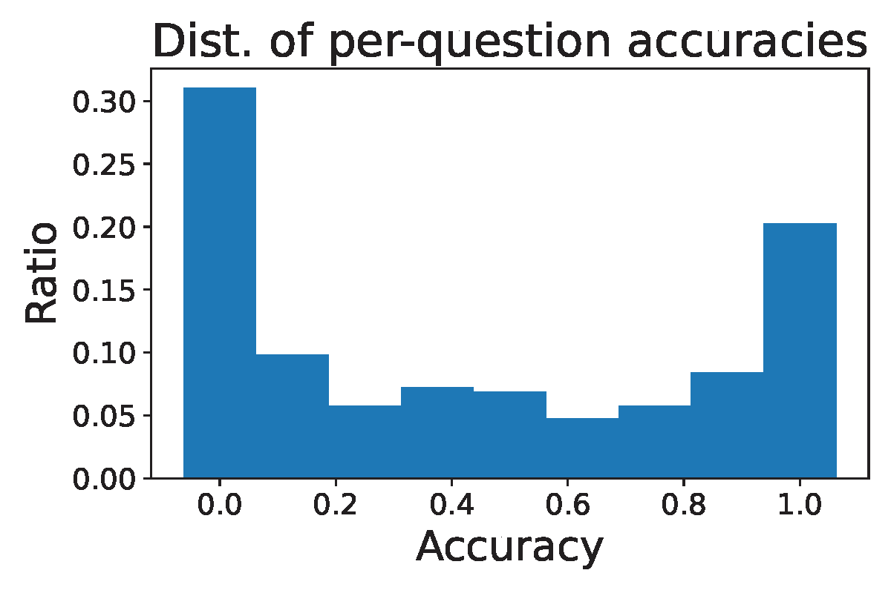
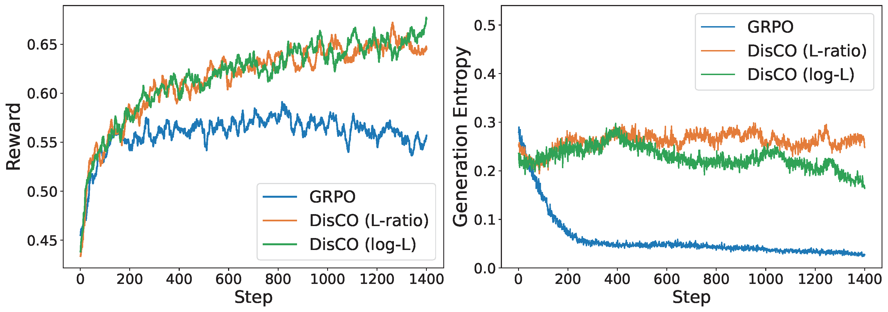

Section 6.6 Discriminative Fine-tuning of Large Language Models
Large Language Models (LLMs) have revolutionized modern AI. Their training typically consists of three stages: self-supervised pretraining on internet-scale text corpora, supervised fine-tuning (SFT) on question–answer datasets, and learning with human preference for alignment. An improved paradigm, reinforcement learning with verifiable rewards (RLVR), further advances large reasoning models by leveraging automatically verifiable signals from synthesized outputs.
6.6.1 Pipeline of LLM Training
Figure 6.24 illustrates the pipeline of LLM Training. We briefly introduce these components below.

Self-supervised Pretraining
Self-supervised pretraining is formulated as next-token prediction. Let \(\mathbf{x}=(x_1, \ldots, x_{m})\) be a sequence of tokens where \(x_j\) belongs to a vocabulary of tokens \(\mathcal{V} = \{v_1, \ldots, v_K\}\). The probability of \(\mathbf{x}\) is modeled auto-regressively by
\[p(\mathbf{x}) = \prod_{j=1}^{m}p(x_j|x_{<j}),\]
where \(x_{<j}\) denotes the prefix \((x_1, \ldots, x_{j-1})\). The conditional probability is modeled via a softmax over a Transformer representation:
\[\begin{align}\label{eqn:autoreg} p(x_j|x_{<j}) = \pi_{\mathbf{w}}(x_j|x_{<j})=\frac{\exp(h(\mathbf{w}_0; x_{<j})^{\top}\mathbf{w}_{x_j})}{\sum_{k=1}^K\exp(h(\mathbf{w}_0; x_{<j})^{\top}\mathbf{w}_{k})}, \end{align}\]
where \(h(\mathbf{w}_0; x_{<j})\in\mathbb{R}^d\) is produced by a Transformer network and \(\mathbf{w}_{x_j}\in\mathbb{R}^d\) is the token embedding. The full model parameters \(\mathbf{w}=(\mathbf{w}_0, \mathbf{w}_1,\ldots, \mathbf{w}_K)\) are learned by minimizing the negative log-likelihood over a dataset \(\mathcal{S} = \{\mathbf{x}_1, \ldots, \mathbf{x}_n\}\):
\[\begin{align}\label{eqn:llm} \min_{\mathbf{w}} -\frac{1}{n}\sum_{i=1}^n \log p(\mathbf{x}_i). \end{align}\]
Supervised Fine-tuning (SFT)
In SFT, a dataset \(\mathcal{S}=\{(\mathbf{x}_i, \mathbf{y}_i)\}\) is used, where \(\mathbf{x}_i\) is an input prompt and \(\mathbf{y}_i\) is the desired output. Let \(\mathbf{x} = (x_1, \ldots, x_k)\) and \(\mathbf{y} = (y_1, \ldots, y_{m'})\) be token sequences from the vocabulary \(\mathcal{V}\). SFT models the next-token prediction of tokens in \(\mathbf{y}\) given \(\mathbf{x}\) using the autoregressive factorization: \(p(\mathbf{y}|\mathbf{x}) = \prod_{j=1}^{m'} \pi_\mathbf{w}(y_j|\mathbf{x}, y_{<j})\), where each term is computed using the same Transformer-based model as in pretraining. SFT minimizes:
\[\begin{align}\label{eqn:sft} \min_{\mathbf{w}} -\frac{1}{n}\sum_{i=1}^n \log p(\mathbf{y}_i|\mathbf{x}_i). \end{align}\]
Learning with Human Preference
SFT does not penalize poor responses. Hence, it does not necessarily guarantee that the likelihood of tokens in a poor answer is low. Let us consider a simple example:
Example: Motivation Example
(\(\mathbf{x}\)) What is the bigger number between 9.11 and 9.9?
(\(\mathbf{y}\)) The bigger number between 9.11 and 9.9 is 9.9.
(\(\mathbf{y}'\)) The bigger number between 9.11 and 9.9 is 9.11.
The good answer \(\mathbf{y}\) and the bad answer \(\mathbf{y}'\) only differ in the last token. The likelihood of all preceding tokens are the same. Even though the likelihood of the last token “9” in \(\mathbf{y}\) conditioned on preceding tokens is increased during the fine-tuning with this data, the likelihood of the token “11” as the last one might still be high, making generating the bad answer \(\mathbf{y}'\) likely.
To address this issue, learning with human feedback fine-tunes the model using preference tuples \((\mathbf{x}, \mathbf{y}_+, \mathbf{y}_-)\), where \(\mathbf{y}_+\) is preferred over \(\mathbf{y}_-\). Two main approaches are reinforcement learning from human feedback (RLHF) and direct preference optimization (DPO).
RLHF
A reward model \(r_\theta(\mathbf{x}, \mathbf{y})\) is first trained to match human preferences by modeling the preference probability \(\Pr(\mathbf{y}_+\succ \mathbf{y}_-|\mathbf{x})\) as
\[p_\theta(\mathbf{y}_+ \succ \mathbf{y}_-|\mathbf{x}) = \frac{\exp(r_\theta(\mathbf{x}, \mathbf{y}_+))}{\exp(r_\theta(\mathbf{x}, \mathbf{y}_+)) + \exp(r_\theta(\mathbf{x}, \mathbf{y}_-))},\]
and minimizing the following:
\[\begin{align}\label{eqn:reward} \theta_* = \min_\theta \mathbb{E}_{\mathbf{x}, \mathbf{y}_+, \mathbf{y}_-} -\log p_\theta(\mathbf{y}_+ \succ \mathbf{y}_-|\mathbf{x}). \end{align}\]
The policy model (i.e., the target LLM) is then optimized by solving the following problem with some RL algorithms:
\[\begin{align}\label{eqn:ppo} \max_\mathbf{w} \mathbb{E}_{\mathbf{x}, \mathbf{y} \sim \pi_\mathbf{w}} \left[r_{\theta_*}(\mathbf{x}, \mathbf{y})\right] - \beta \mathbb{E}_{\mathbf{x}}\left[\text{KL}(\pi_\mathbf{w}(\cdot|\mathbf{x}), \pi_{\text{ref}}(\cdot|\mathbf{x}))\right], \end{align}\]
where the KL divergence is defined as:
\[\text{KL}(\pi_{\mathbf{w}}(\cdot|\mathbf{x}), \pi_{\text{ref}}(\cdot|\mathbf{x})) = \mathbb{E}_{\mathbf{y} \sim \pi_{\mathbf{w}}(\cdot|\mathbf{x})} \left[ \log \frac{\pi_{\mathbf{w}}(\mathbf{y}|\mathbf{x})}{\pi_{\text{ref}}(\mathbf{y}|\mathbf{x})} \right],\]
where \(\pi_{\text{ref}}\) denotes a base model. If we decompose \(\mathbf{y} = (y_1, \ldots, y_k)\) as a sequence of tokens, then using the autoregressive factorization the KL divergence can be expressed as a sum over tokens:
\[\text{KL}(\pi_{\mathbf{w}}(\cdot|\mathbf{x}), \pi_{\text{ref}}(\cdot|\mathbf{x})) = \mathbb{E}_{\mathbf{y} \sim \pi_{\mathbf{w}}} \left[ \sum_{t=1}^k \log \frac{\pi_{\mathbf{w}}(y_t|\mathbf{x}, y_{<t})}{\pi_{\text{ref}}(y_t|\mathbf{x}, y_{<t})} \right].\]
Direct Preference Optimization (DPO)
DPO directly optimizes the policy without a separate reward model. A closed-form non-parameterized solution of \(\pi\) by solving (\(\ref{eqn:ppo}\)) for any reward model \(r(\mathbf{x}, y)\), gives:
\[\pi(\mathbf{y}|\mathbf{x}) = \frac{1}{Z(\mathbf{x})}\pi_{\text{ref}}(\mathbf{y}|\mathbf{x})\exp(\beta r(\mathbf{x}, \mathbf{y})),\]
where \(Z(\mathbf{x})\) is the normalization factor. Substituting into (\(\ref{eqn:reward}\)) leads to:
\[\begin{align}\label{eqn:dpo} \min_{\mathbf{w}} \mathbb{E}_{\mathbf{x}, \mathbf{y}_+, \mathbf{y}_-} \log\left(1 + \exp\left(\beta \log\frac{\pi_\mathbf{w}(\mathbf{y}_-|\mathbf{x})}{\pi_{\text{ref}}(\mathbf{y}_-|\mathbf{x})} - \beta \log\frac{\pi_\mathbf{w}(\mathbf{y}_+|\mathbf{x})}{\pi_{\text{ref}}(\mathbf{y}_+|\mathbf{x})}\right)\right). \end{align}\]
In practice, a set of tuples \(\{(\mathbf{x}_i, \mathbf{y}_{i+}, \mathbf{y}_{i-})\}_{i=1}^n\) is constructed and used for learning.
DPO can be also motivated from discriminative learning, particularly AUC maximization. We view generating the answers of \(\mathbf{x}\) as a task, and \(\mathbf{y}_+\) denotes a positive data and \(\mathbf{y}_-\) denotes a negative data. Let \(s(\mathbf{w}, \mathbf{x}, \mathbf{y})\) denote a scoring function, which indicates the likelihood of generating \(\mathbf{y}\) given \(\mathbf{x}\). By AUC maximization with a continuous surrogate loss \(\ell(s(\mathbf{w}, \mathbf{x}, \mathbf{y}_-) - s(\mathbf{w}, \mathbf{x}, \mathbf{y}_+))\), we have the following problem:
\[\begin{align}\label{eqn:dpo-auc} \min_{\theta}\mathbb{E}_{\mathbf{x}, \mathbf{y}_+, \mathbf{y}_-}\ell(s(\mathbf{w}, \mathbf{x}, \mathbf{y}_-) - s(\mathbf{w}, \mathbf{x}, \mathbf{y}_+)). \end{align}\]
DPO can be recovered by setting \(s(\mathbf{w}, \mathbf{x}, \mathbf{y})=\log\frac{\pi(\mathbf{y}|\mathbf{x})}{\pi_{\text{ref}}(\mathbf{y}|\mathbf{x})}\) and \(\ell(s) = \log(1+\exp(\beta s))\).
Reinforcement Learning with Verifiable Rewards (RLVR)
RLVR is an emerging paradigm for training reasoning models, particularly suited for tasks like mathematical problem solving, where models are expected to generate step-by-step solutions followed by a final answer. Unlike RLHF, which relies on subjective preference labels, RLVR leverages verifiable signals such as whether the final answer is correct.
A large reasoning model is a type of LLM that is specifically designed or fine-tuned to perform multi-step logical reasoning, such as solving math problems, answering complex questions, or generating structured arguments. It generates intermediate reasoning tokens before producing the final answer, mimicking System 2 reasoning in humans, which is deliberate, logical, and slow.
RLVR is illustrated in Figure 6.25. The old model in one step of learning is denoted by \(\pi_{\text{old}}\). It is used to generate multiple answers for a set of input questions. Given a question \(\mathbf{x}\) (with prompt included), one generated output \(\mathbf{y}\) follows the distribution \(\pi_{\text{old}}(\cdot|\mathbf{x})\), which includes reasoning traces and the final answer. Specifically, output \(\mathbf{y}\) is generated token by token, i.e., \(y_t \sim \pi_{\text{old}}(\cdot|\mathbf{x},y_{<t})\), for \(t=1, \cdots, |\mathbf{y}|\).
A key to RLVR is to assume that there exists a verifier, which can automatically verify the quality of the generated answer, giving a reward. Let us consider a binary reward setting where the verifier returns a binary value for a given question \(\mathbf{x}\) and its corresponding answer in the output \(\mathbf{y}\). For answering mathematical questions, this can be achieved by comparing the generated answer with the true answer. For generating mathematical proofs, we can use a formal verification tool such as LEAN to verify if the proof is correct.

Proximal Policy Optimization (PPO)
PPO is a classical RL algorithm. Let
\[\rho_{\mathbf{w}}(\mathbf{x}, \mathbf{y}) = \frac{\pi_{\mathbf{w}}(\mathbf{y}|\mathbf{x})}{\pi_{\text{old}}(\mathbf{y}|\mathbf{x})}\]
denote the likelihood ratio between the new policy \(\pi_{\mathbf{w}}\) and the old policy \(\pi_{\text{old}}\). Let \(A(\mathbf{x}, \mathbf{y})\) be an advantage function for taking action \(\mathbf{y}\) given input \(\mathbf{x}\), which measures how much better a specific action is compared to the policy’s average behavior in a given state. The PPO objective is given by:
\[\begin{align*} \mathcal{L}_{\text{PPO}}(\mathbf{w}) =& \mathbb{E}_{\mathbf{x}, \mathbf{y} \sim \pi_{\text{old}}} \left[ \min\left( \rho_{\mathbf{w}}(\mathbf{x}, \mathbf{y}) \cdot A(\mathbf{x}, \mathbf{y}), \,\text{clip}(\rho_{\mathbf{w}}(\mathbf{x}, \mathbf{y}), 1 - \epsilon, 1 + \epsilon) \cdot A(\mathbf{x}, \mathbf{y})\right) \right]\\ & - \beta \text{KL}(\pi_{\mathbf{w}}, \pi_{\text{ref}}), \end{align*}\]
where \(\epsilon > 0\) is a small
hyperparameter (typically around 0.1 or 0.2), and the clip
function restricts the likelihood ratio \(\rho_{\mathbf{w}}(\mathbf{x}, \mathbf{y})\)
to the range \([1 - \epsilon, 1 +
\epsilon]\), defined as:
\[\text{clip}(\rho_{\mathbf{w}}(\mathbf{x}, \mathbf{y}), 1 - \epsilon, 1 + \epsilon) = \begin{cases} 1 - \epsilon & \text{if } \rho_{\mathbf{w}}(\mathbf{x}, \mathbf{y}) < 1 - \epsilon, \\ \rho_{\mathbf{w}}(\mathbf{x}, \mathbf{y}) & \text{if } 1 - \epsilon \leq \rho_{\mathbf{w}}(\mathbf{x}, \mathbf{y}) \leq 1 + \epsilon, \\ 1 + \epsilon & \text{if } \rho_{\mathbf{w}}(\mathbf{x}, \mathbf{y}) > 1 + \epsilon. \end{cases}\]
The intuition of using the clipping mechanism is that:
- When \(A(\mathbf{x}, \mathbf{y}) > 0\) (the action is better than expected), the clip operation prevents \(\pi_{\mathbf{w}}\) from increasing its probability too aggressively.
- When \(A(\mathbf{x}, \mathbf{y}) < 0\) (the action is worse than expected), the clip operation prevents \(\pi_{\mathbf{w}}\) from decreasing its probability too drastically.
This clipping mechanism was used to reduce variance and maintain stable training dynamics for reinforcement learning. However, it also suffers from zero gradient when \(\rho_\mathbf{w}(\mathbf{x}, \mathbf{y})\) is out of the range \([1-\epsilon, 1+\epsilon]\), which might slow down the learning process.
Trust Region Policy Optimization (TRPO)
TRPO is a principled policy optimization method that improves stability and efficiency by restricting each policy update to stay within a small trust region. It maximizes a surrogate objective function based on the advantage estimates under the old policy, while constraining the average Kullback–Leibler (KL) divergence between the old and new policies. Formally, TRPO solves the following constrained optimization problem:
\[\begin{align*} \max_{\theta} \quad & \mathbb{E}_{\mathbf{x}, \mathbf{y} \sim \pi_{\text{old}}} \left[ \rho_{\mathbf{w}}(\mathbf{x}, \mathbf{y}) A(\mathbf{x},\mathbf{y}) \right] \\ \text{subject to} \quad & \mathbb{E}_{\mathbf{x}} \left[ \text{KL} \left( \pi_{\text{old}}(\cdot|\mathbf{x}) , \pi_\mathbf{w}(\cdot|\mathbf{x}) \right) \right] \leq \delta, \end{align*}\]
where \(\delta\) is a predefined trust region threshold. The KL divergence is taken in the reverse direction to ensure that the updated policy does not deviate too much from the old policy on average across the state distribution.
Group Relative Policy Optimization (GRPO).
GRPO is a reinforcement learning algorithm designed to optimize policies by leveraging group-wise relative reward information.
For inputs \(\{\mathbf{x}_i\}_{i=1}^m\), let \(\{\mathbf{y}_{ij}\}_{j=1}^k\) denote the corresponding set of \(k\) generated answers for each \(\mathbf{x}_i\). The objective of GRPO for maximization is defined by:
\[\begin{align}\label{eqn:grpo} \mathcal{J}_{\text{GRPO}}(\mathbf{w}) =& \frac{1}{m}\sum_{i=1}^m\frac{1}{k}\sum_{j=1}^k\bigg[\frac{1}{|\mathbf{y}_{ij}|}\sum_{t=1}^{|\mathbf{y}_{ij}|}f\left(\frac{\pi_\mathbf{w}(y_{ij,t}|\mathbf{x}, y_{ij, <t})}{\pi_{\text{old}}(y_{ij,t}|\mathbf{x}, y_{ij,<t})}, A(\mathbf{x}_i, \mathbf{y}_{ij})\right)\bigg] \notag\\ & - \beta \text{KL}(\pi_{\mathbf w}, \pi_{\text{ref}}), \end{align}\]
where \(y_{ij,t}\) denotes its \(t\)-th token and \(y_{ij,<t}\) denotes the prefix of the \(t\)-th token of \(\mathbf{y}_{ij}\), \(f(s,t) = \min (st, \text{clip}(s, 1-\epsilon, 1+\epsilon)t)\), \(\pi_{\text{ref}}\) is a frozen reference model, and \(A(\mathbf{x}_i, \mathbf{y}_{ij})\) is the group-wise advantage function defined as
\[A(\mathbf{x}, \mathbf{y}) = \frac{r(\mathbf{y}|\mathbf{x})-\bar{r}_q}{\sigma_q}\]
with \(\bar{r}_q\) being the average reward of outputs for \(\mathbf{x}\) and \(\sigma_q\) being its standard deviation. This advantage function quantifies how much better the reward of an output \(\mathbf{y}\) is compared to average reward in the group. For analysis, we consider the expected version:
\[\begin{align*} \mathcal{J}_{\text{GRPO}}(\mathbf{w})= \mathbb{E}_\mathbf{x}\mathbb{E}_{\mathbf{y}\sim\pi_{\text{old}}(\cdot|\mathbf{x})}\bigg[\frac{1}{|\mathbf{y}|}\sum_{t=1}^{|\mathbf{y}|}f\left(\frac{\pi_\mathbf{w}(y_{t}|\mathbf{x},y_{<t})}{\pi_{\text{old}}(y_t|\mathbf{x},y_{<t})}, A(\mathbf{x}, \mathbf{y})\right)\bigg] - \beta \text{KL}(\pi_{\mathbf w}, \pi_{\text{ref}}), \end{align*}\]
where
\[\begin{align}\label{eqn:adv-grpo} A(\mathbf{x}, \mathbf{y}) = \frac{r(\mathbf{y}|\mathbf{x})-\mathbb{E}_{\mathbf{y}'\sim\pi_{\text{old}}(\cdot|\mathbf{x})}r(\mathbf{y}'|\mathbf{x})}{\sqrt{\text{Var}_{\mathbf{y}'\sim\pi_{\text{old}}(\cdot|\mathbf{x})}r(\mathbf{y}'|\mathbf{x})}}. \end{align}\]
6.6.2 DFT for fine-tuning Large Language Models
While learning with human feedback addresses the limitation of SFT, traditional supervised learning methods never use human preference data. For example, in image classification, training data \((\mathbf{x}, y)\) denote an input image and its true class label \(y\in\{1,\ldots, K\}\). We do not need the preference optimization step on preference data saying that a dog class is preferred to a cat class for an image of a dog. So what is the difference between traditional supervised learning and supervised finetuning of LLMs that makes SFT not enough? One difference is that traditional supervised learning methods are usually discriminative approaches, while the SFT method is not discriminative.
By casting the supervised fine-tuning of LLMs into data prediction, we can leverage discriminative learning approaches, e.g., the discriminative probabilistic modeling (DPM) approach and the robust optimization approach.
DPM over an Infinite Data Space
Let \(\mathcal{X}\) and \(\mathcal{Y}\) be infinite data spaces. Let us consider \(\mathcal{X}\) as an anchor space and \(\mathcal{Y}\) as the target space with a Lebesgue measure \(\mu\). When \(\mathcal{Y}\) is countably infinite, the Lebesgue measure \(\mu\) is replaced by the counting measure. We model the probability density \(\Pr(\mathbf{y}\mid\mathbf{x})\) of an object \(\mathbf{y}\in\mathcal{Y}\) given an anchor object \(\mathbf{x}\in\mathcal{X}\) by a parameterized scoring function \(s(\mathbf{w}; \mathbf{x}, \mathbf{y})\):
\[\begin{align}\label{eq:prob_model} P_\mathbf{w}(\mathbf{y}\mid \mathbf{x}) = \frac{\exp(s(\mathbf{w}; \mathbf{x},\mathbf{y})/\tau)}{\int_\mathcal{Y} \exp(s(\mathbf{w}; \mathbf{x},\mathbf{y}')/\tau) d\mu(\mathbf{y}')}, \end{align}\]
where \(\tau > 0\) is a temperature parameter. We assume that \(\exp(s(\mathbf{w}; \mathbf{x},\mathbf{y})/\tau)\) is Lebesgue-integrable for \(\mathbf{w}\in\mathcal{W}\), \(\mathcal{W}\subset \mathbb{R}^d\). Here \(P_\mathbf{w}(\mathbf{y}\mid \mathbf{x})\) is a valid probability density function because \(\int_\mathcal{Y} P_\mathbf{w}(\mathbf{y}\mid \mathbf{x}) d\mu(\mathbf{y})= 1\). Given \(\{(\mathbf{x}_1,\mathbf{y}_1),\dotsc,(\mathbf{x}_n,\mathbf{y}_n)\}\) sampled from the joint distribution \(p_{\mathbf{x},\mathbf{y}}\), the maximum likelihood estimation (MLE) can be formulated as the following:
\[\begin{align}\label{eq:mle} \min_\mathbf{w} & \left\{- \frac{1}{n}\sum_{i=1}^n \tau \log\frac{\exp(s(\mathbf{w}; \mathbf{x},\mathbf{y})/\tau)}{\int_\mathcal{Y} \exp(s(\mathbf{w}; \mathbf{x},\mathbf{y}')/\tau) d\mu(\mathbf{y}')}\right\}\notag\\ & = - \frac{1}{n}\sum_{i=1}^n s(\mathbf{w}; \mathbf{x},\mathbf{y}) + \tau \log\left(\int_\mathcal{Y} \exp(s(\mathbf{w}; \mathbf{x},\mathbf{y}')/\tau) d\mu(\mathbf{y}')\right). \end{align}\]
If \(\mathcal{Y}\) is finite, the above DPM framework recovers the traditional multi-class classification and learning to rank. In particular, if \(\mathcal{Y}\) denotes the label set \(\{1, \ldots, K\}\) and \(s(\mathbf{w}; \mathbf{x}, y)\) denotes the classification score for the \(y\)-th class, then the above approach recovers logistic regression. If \(\mathcal{Y}\) denotes the set of items \(\mathcal{Y} = \{\mathbf{x}_{q,1}, \ldots, \mathbf{x}_{q, N_q}\}\) and the anchor data \(\mathbf{x}\) denotes a query, then the above approach recovers the ListNet.
Optimization via FCCO
The main challenge for solving the DPM problem over an infinite data space lies in computing the integral \(g(\mathbf{w};\mathbf{x}_i,\mathcal{Y}) := \int_\mathcal{Y} \exp\left(s(\mathbf{w}; \mathbf{x}_i, \mathbf{y}')/\tau \right) d\mu(\mathbf{y}')\) for each \(i \in [n]\), which is infeasible unless \(\mathcal{Y}\) is finite. Below, we discuss two general approaches for tackling the challenge.
Sample and Optimize
The first approach is to introduce a sampling distribution \(P_i(\cdot)\), satisfying that (1) it is easy to sample data from \(P_i\); (2) it is possible to compute the probability value of a sample \(\mathbf{y}'\). Then we write
\[\begin{align*} \int_\mathcal{Y} \exp\left(\frac{s(\mathbf{w}; \mathbf{x}_i, \mathbf{y}')}{\tau}\right)d\mu(\mathbf{y}') = \mathbb{E}_{\mathbf{y}'\sim P_i(\cdot)}\frac{\exp(s(\mathbf{w}; \mathbf{x}_i, \mathbf{y}')/\tau)}{P_i(\mathbf{y}')}. \end{align*}\]
The optimization problem becomes an instance of FCCO:
\[\begin{align} \min_{\mathbf{w}} & -\frac{1}{n}\sum_{i=1}^n s(\mathbf{w}; \mathbf{y}_i, \mathbf{x}_i) \nonumber\\ & + \frac{1}{n}\sum_{i=1}^n \tau \log \bigg(\mathbb{E}_{\mathbf{y}'\sim P_i(\cdot)}\frac{\exp(s(\mathbf{w}; \mathbf{y}', \mathbf{x}_i)/\tau)}{P_i(\mathbf{y}')}\bigg).\label{eq:dftv1_final} \end{align}\]
Approximate and Optimize
In some cases, we may only have sampled data from \(P_i(\cdot)\) without access to \(P_i(\cdot)\). Let \(\mathcal{S}_i=\{\mathbf{y}'_{i,1}, \ldots, \mathbf{y}'_{i,m}\}\) denote a set of outputs sampled for each data \(\mathbf{x}_i\) following some \(P_i\). Then we approximate \(g(\mathbf{w};\mathbf{x}_i,\mathcal{Y})\) by
\[\begin{align*} g(\mathbf{w};\mathbf{x}_i,\mathcal{Y})\approx\frac{1}{m}\sum_{\mathbf{y}'\in\mathcal{S}^-_i} \frac{\exp(s(\mathbf{w}; \mathbf{y}', \mathbf{x})/\tau)}{P_i(\mathbf{y}')} \propto \frac{1}{m}\sum_{\mathbf{y}'\in\mathcal{S}_i} \exp\left(\frac{s(\mathbf{w}; \mathbf{y}', \mathbf{x})}{\tau}\right), \end{align*}\]
where the last step assumes \(P_i(\mathbf{y}')\) are approximately equal. Then the optimization problem becomes an instance of FCCO:
\[\begin{align}\label{eq:dftv2} \min_{\theta} & -\frac{1}{n}\sum_{i=1}^n s(\mathbf{w}; \mathbf{y}_i,\mathbf{x}_i) \nonumber\\ & + \frac{1}{n}\sum_{i=1}^n \tau \log \bigg(\frac{1}{m}\sum\nolimits_{\mathbf{y}'\in\mathcal{S}_i}\exp(s(\mathbf{w}; \mathbf{y}', \mathbf{x}_i)/\tau)\bigg). \end{align}\]


Algorithm 36: The DFT Algorithm
- Initialize \(\mathbf{w}_1\) as the base LLM, and \(\mathbf{u}_0=\mathbf{1}\)
- for \(t=1,\dotsc,T-1\) do
- Sample a mini-batch \(\mathcal{B}_t\subset \{\mathbf{x}_1,\dotsc,\mathbf{x}_n\}\)
- for each \(\mathbf{x}_i\in\mathcal{B}_t\) do
- Sample a mini-batch \(\mathcal{B}^-_{i,t}\) from \(\pi_{\text{ref}}(\cdot|\bar{\mathbf{x}}_i)\) via an offline pool
- Update \(u_{i,t}\) according to
\[u_{i,t} = (1-\gamma) u_{i, t-1} + \gamma \frac{1}{B}\sum_{\mathbf{y}'\in\mathcal{B}_{i,t}^0}\frac{\exp(\frac{s(\mathbf{w}_t; \mathbf{y}', \mathbf{x}_i)}{\tau})}{\pi_{\text{ref}}(\mathbf{y}'|\bar{\mathbf{x}}_i)}\]
- end for
- Compute a vanilla gradient estimator \(\mathbf{z}_t\) according to
\[\mathbf{z}_t = - \frac{1}{|\mathcal{B}_t|}\sum_{\mathbf{x}_i\in\mathcal{B}_t} \nabla s(\mathbf{w}_t; \mathbf{y}_i, \mathbf{x}_i) + \frac{1}{|\mathcal{B}_t|}\sum_{\mathbf{x}_i\in\mathcal{B}_t}\frac{1}{u_{i,t}|\mathcal{B}_{i,t}^-|}\sum_{\mathbf{y}'\in\mathcal{B}_{i,t}^-}\frac{\exp(\frac{s(\mathbf{w}_t; \mathbf{y}', \mathbf{x}_i)}{\tau})\nabla s(\mathbf{w}_t; \mathbf{y}', \mathbf{x}_i)}{\pi_{\text{ref}}(\mathbf{y}'|\bar{\mathbf{x}}_i)}\]
- Update \(\mathbf{w}_{t+1}\) using Momentum or AdamW
- end for
DFT for fine-tuning LLMs
Let us apply the DPM approach to fine-tuning LLMs, which is referred to as discriminative fine-tuning (DFT).
Discriminative Likelihood
Unlike SFT that maximizes the generative likelihood of tokens, DFT will maximize the discriminative likelihood of data as defined in (\(\ref{eq:prob_model}\)). By maximizing the discriminative log-likelihood of the training data, we not only increase the score of the true output \(\mathbf{y}_i\) for each input \(\mathbf{x}_i\), corresponding to the numerator of the discriminative likelihood, but also decrease the scores of other potentially bad answers in \(\mathcal{Y}\), which correspond to the denominator of the discriminative likelihood; see Figure 6.26.
The Scoring Function
For fine-tuning LLMs, the scoring function can be defined based on the generative log-likelihood \(\log \pi_\mathbf{w}(\mathbf{y}|\mathbf{x})\), as it measures the likeliness of generating \(\mathbf{y}\) given \(\mathbf{x}\) by the model \(\pi_\mathbf{w}\). For a good model, we expect that a high value of the generative log-likelihood \(\log \pi_\mathbf{w}(\mathbf{y}|\mathbf{x})\) would indicate a high fitness score of \(\mathbf{y}\) to answer \(\mathbf{x}\). With such correspondence, the above discriminative learning framework would increase the chance of generating a good output \(\mathbf{y}\) given \(\mathbf{x}\) and decrease the chance of generating possibly bad outputs given \(\mathbf{x}\). Common choices for the scoring function include the raw log-likelihood \(s(\mathbf{w}; \mathbf{y}, \mathbf{x}) = \log \pi_\mathbf{w}(\mathbf{y}|\mathbf{x})\) and a length-normalized version \(s(\mathbf{w}; \mathbf{y}, \mathbf{x}) = \frac{1}{|\mathbf{y}|} \log \pi_\mathbf{w}(\mathbf{y}|\mathbf{x})\). Using the unnormalized version \(s_\mathbf{w}(\mathbf{y}, \mathbf{x}) = \log \pi_\mathbf{w}(\mathbf{y}|\mathbf{x})\) leads to the following DFT objective:
\[\begin{align} \min_{\mathbf{w}} & -\frac{1}{n}\sum_{i=1}^n \log \pi_\mathbf{w}(\mathbf{y}_i|\mathbf{x}_i) \nonumber\\ & + \tau \frac{1}{n}\sum_{i=1}^n\log \bigg(\sum\nolimits_{\mathbf{y}'\in\mathcal{Y}}\exp\bigg(\frac{\log \pi_\mathbf{w}(\mathbf{y}'|\mathbf{x}_i)}{\tau}\bigg)\bigg).\label{eqn:dft1} \end{align}\]
Comparing the DFT objective to that of SFT in (\(\ref{eqn:sft}\)), we observe that the first term in (\(\ref{eqn:dft1}\)) is identical to the objective of SFT. The key difference lies in the second term, which penalizes the possibly poor outputs in \(\mathcal{Y}\) for each \(\mathbf{x}_i\) by reducing their generative log-likelihood, thereby discouraging their generation.

Sampling Distribution
The optimization analysis reveals that the variance bound \(\sigma_0\) of the mini-batch estimator for the inner function \(g(\mathbf{w}; \mathbf{x}_i, \mathcal{Y})\) significantly impacts convergence speed (cf. Theorem 5.1). Ideally, the variance-minimizing distribution is \(P_\mathbf{w}(\cdot|\mathbf{x}_i)\). However, this distribution is impractical to evaluate and difficult to sample from directly. Moreover, we aim for the sampled outputs \(\mathbf{y}' \sim P_i(\cdot)\) to represent likely poor responses to \(\mathbf{x}_i\). A practical approach is to define \(P_i(\cdot) = \pi_{\text{ref}}(\cdot|\bar{\mathbf{x}}_i)\), where \(\pi_{\text{ref}}\) denotes the base LLM to be fine-tuned and \(\bar{\mathbf{x}}_i\) is an augmented version of \(\mathbf{x}_i\) with added system prompts to encourage the generation of suboptimal outputs. This relies on the assumption that the base model is unlikely to generate high-quality answers in this context.
The Optimization Algorithm
An application of the SOX algorithm for solving (\(\ref{eq:dftv1_final}\)) is presented in Algorithm 36. The sequence \(\{u_t\}\) plays a critical role in effectively penalizing the sampled “negative data,” as illustrated in Figure 6.27.
A PyTorch implementation of DFT is at https://github.com/Optimization-AI/DFT.
6.6.3 DisCO for Reinforcing Large Reasoning Models
DisCO, short for Discriminative Constrained Optimization, is a recent approach for reinforcing large reasoning models. It is motivated by the connection between the GRPO objective and discriminative learning objectives, and is designed to overcome key limitations of GRPO and its variants.
Limitation of GRPO and Connection with Discriminative Learning
Let \(r(\mathbf{y}|\mathbf{x})\in\{1,0\}\) denote the reward assigned to an output \(\mathbf{y}\) with respect to the input \(\mathbf{x}\). A quantity that is important to the analysis is \(p(\mathbf{x}) = \mathbb{E}_{\mathbf{y}\sim \pi_{\text{old}}(\cdot|\mathbf{x})}[r(\mathbf{y}|\mathbf{x})]\in [0,1]\), which quantifies the difficulty of the question \(\mathbf{x}\) under the model \(\pi_{\text{old}}\). We denote by \(\pi_{\text{old}}^+(\cdot|\mathbf{x})\) the conditional distribution of outputs when the reward is one (i.e., positive answers) and by \(\pi_{\text{old}}^-(\cdot|\mathbf{x})\) the conditional distribution of outputs when the reward is zero (i.e., negative answers).
In the following analysis we assume \(p(\mathbf{x})=\mathbb{E}_{\mathbf{y}\sim \pi_{\text{old}}(\cdot|\mathbf{x})}r(\mathbf{y}|\mathbf{x})\in(0,1)\); otherwise we can remove them from consideration as done in practice.
Proposition 6.1
Let us consider the objective of GRPO and its variants with the following form:
\[\begin{align} \mathcal{J}_0(\mathbf{w})= \mathbb{E}_\mathbf{x}\mathbb{E}_{\mathbf{y}\sim\pi_{\text{old}}(\cdot|\mathbf{x})}\bigg[\frac{1}{|\mathbf{y}|}\sum_{t=1}^{|\mathbf{y}|}f\left(\frac{\pi_\mathbf{w}(y_t|\mathbf{x},y_{<t})}{\pi_{\text{old}}(y_t|\mathbf{x},y_{<t})}, A(\mathbf{x}, \mathbf{y})\right)\bigg], \end{align}\]
where \(A(\mathbf{x}, \mathbf{y})\) is given in (\(\ref{eqn:adv-grpo}\)). Assume that \(f(x, y)\) is non-decreasing function of \(x\) such that \(f(x, y)=\mathbb{I}(y>0)y f^+(x, 1) - \mathbb{I}(y\leq 0) yf^-(x, 1)\), where both \(f^+, f^-\) are non-decreasing functions of \(x\), then we have
\[\mathcal{J}_0(\mathbf{w})=\mathbb{E}_\mathbf{x}\sqrt{p(\mathbf{x})(1-p(\mathbf{x}))}\mathbb{E}_{\mathbf{y}\sim\pi_{\text{old}}^+(\cdot|\mathbf{x}), \mathbf{y}'\sim\pi_{\text{old}}^-(\cdot|\mathbf{x})}[s^+(\mathbf{w};\mathbf{y}, \mathbf{x})-s^-(\mathbf{w};\mathbf{y}', \mathbf{x})],\]
where
\[\begin{align*} s^+(\mathbf{w}; \mathbf{y}, \mathbf{x}) &= \frac{1}{|\mathbf{y}|}\sum_{t=1}^{|\mathbf{y}|}f^+\left(\frac{\pi_\mathbf{w}(y_t|\mathbf{x},y_{<t})}{\pi_{\text{old}}(y_t|\mathbf{x},y_{<t})}, 1\right)\\ s^-(\mathbf{w}; \mathbf{y}, \mathbf{x}) &= \frac{1}{|\mathbf{y}|}\sum_{t=1}^{|\mathbf{y}|}f^-\left(\frac{\pi_\mathbf{w}(y_t|\mathbf{x},y_{<t})}{\pi_{\text{old}}(y_t|\mathbf{x},y_{<t})}, 1\right). \end{align*}\]
In particular, for GRPO we have
\[\begin{align}\label{eqn:grpos} s^+(\mathbf{w};\mathbf{y}, \mathbf{x}) &=\frac{1}{|\mathbf{y}|}\sum_{t=1}^{|\mathbf{y}|}\min\left(\frac{\pi_\mathbf{w}(y_t|\mathbf{x},y_{<t})}{\pi_{\text{old}}(y_t|\mathbf{x},y_{<t})}, 1+\epsilon\right), \\ s^-(\mathbf{w};\mathbf{y}, \mathbf{x}) &= \frac{1}{|\mathbf{y}|}\sum_{t=1}^{|\mathbf{y}|}\max\left(\frac{\pi_\mathbf{w}(y_t|\mathbf{x},y_{<t})}{\pi_{\text{old}}(y_t|\mathbf{x},y_{<t})}, 1-\epsilon\right). \end{align}\]
Proof. Since \(\mathbb{E}_{\mathbf{y}\sim\pi_{\text{old}}(\cdot|\mathbf{x})}r(\mathbf{y}|\mathbf{x}) = p(\mathbf{x})\) and \(\text{Var}_{\mathbf{y}\sim\pi_{\text{old}}(\cdot|\mathbf{x})}r(\mathbf{y}|\mathbf{x}) = p(\mathbf{x})(1- p(\mathbf{x}))\), we have
\[A(\mathbf{x}, \mathbf{y}) = \begin{cases} \sqrt{\frac{1-p(\mathbf{x})}{p(\mathbf{x})}}, & \text{ if }r(\mathbf{y}|\mathbf{x})=1, \\ -\sqrt{\frac{p(\mathbf{x})}{1-p(\mathbf{x})}}, & \text{ if } r(\mathbf{y}|\mathbf{x})=0. \end{cases}\]
By the law of total expectation, we have
\[\begin{equation}\label{eqn:sim_grpo} \begin{aligned} &\mathbb{E}_\mathbf{x}\mathbb{E}_{\mathbf{y}\sim\pi_{\text{old}}(\cdot|\mathbf{x})}\bigg[\frac{1}{|\mathbf{y}|}\sum_{t=1}^{|\mathbf{y}|}f\bigg(\frac{\pi_\mathbf{w}(y_t|\mathbf{x},y_{<t})}{\pi_{\text{old}}(y_t|\mathbf{x},y_{<t})}, A(\mathbf{x}, \mathbf{y})\bigg)\bigg] \\ &=\mathbb{E}_\mathbf{x}\bigg[ p(\mathbf{x})\mathbb{E}_{\mathbf{y}\sim\pi_{\text{old}}^+(\cdot|\mathbf{x})} \frac{1}{|\mathbf{y}|}\sum_{t=1}^{|\mathbf{y}|}f\bigg(\frac{\pi_\mathbf{w}(y_t|\mathbf{x},y_{<t})}{\pi_{\text{old}}(y_t|\mathbf{x},y_{<t})}, A(\mathbf{x}, \mathbf{y})\bigg)\\ &\quad\quad\quad + (1- p(\mathbf{x}))\mathbb{E}_{\mathbf{y}\sim\pi_{\text{old}}^-(\cdot|\mathbf{x})}\frac{1}{|\mathbf{y}|}\sum_{t=1}^{|\mathbf{y}|}f\bigg(\frac{\pi_\mathbf{w}(y_t|\mathbf{x},y_{<t})}{\pi_{\text{old}}(y_t|\mathbf{x},y_{<t})}, A(\mathbf{x}, \mathbf{y})\bigg)\bigg]\\ &=\mathbb{E}_\mathbf{x}\sqrt{p(\mathbf{x})(1-p(\mathbf{x}))}\bigg[\mathbb{E}_{\mathbf{y}\sim\pi_{\text{old}}^+(\cdot|\mathbf{x})} \frac{1}{|\mathbf{y}|}\sum_{t=1}^{|\mathbf{y}|}f^+\left(\frac{\pi_\mathbf{w}(y_t|\mathbf{x},y_{<t})}{\pi_{\text{old}}(y_t|\mathbf{x},y_{<t})}, 1\right) \\ &\quad\quad\quad\quad\quad\quad\quad\quad\quad\quad-\mathbb{E}_{\mathbf{y}\sim\pi_{\text{old}}^-(\cdot|\mathbf{x})}\frac{1}{|\mathbf{y}|}\sum_{t=1}^{|\mathbf{y}|}f^-\left(\frac{\pi_\mathbf{w}(y_t|\mathbf{x},y_{<t})}{\pi_{\text{old}}(y_t|\mathbf{x},y_{<t})}, 1\right) \bigg], \end{aligned} \end{equation}\]
where the last equality follows from the assumption about \(f(x, y)\). For GRPO, we have \(f^+(x, 1) = \min(x, 1+\epsilon)\) and \(f^-(x, 1) = \max(x, 1-\epsilon)\).
■
💡 Why it matters
We derive two insights from Proposition 6.1 regarding the two components of \(\mathcal{J}_0\). First, let us consider the component \(\mathbb{E}_{\mathbf{y}\sim\pi_{\text{old}}^+(\cdot|\mathbf{x}), \mathbf{y}'\sim\pi_{\text{old}}^-(\cdot|\mathbf{x})}[s^+(\mathbf{w};\mathbf{y}, \mathbf{x})-s^-(\mathbf{w};\mathbf{y}', \mathbf{x})]\). Since both \(f^+\) and \(f^-\) are non-decreasing functions of the first argument, then both \(s^+(\mathbf{w};\mathbf{y}, \mathbf{x})\) and \(s^-(\mathbf{w};\mathbf{y}, \mathbf{x})\) are non-decreasing functions of \(\pi_{\theta}(y_t|\mathbf{x}, y_{<t})\). Hence, maximizing \(\mathcal{J}_0\) would increase the likelihood of tokens in the positive answers and decrease the likelihood of tokens in the negative answers. This makes sense as we would like the new model to have a high likelihood of generating a positive (correct) answer and a low likelihood of generating a negative (incorrect) answer. This mechanism is closely related to traditional discriminative methods of supervised learning in the context of AUC maximization, which aims to maximize the scores of positive samples \(\mathbf{y}\sim \pi_{\text{old}}^+(\cdot|\mathbf{x})\) while minimizing scores of negative samples \(\mathbf{y}'\sim \pi_{\text{old}}^-(\cdot|\mathbf{x})\), where the \(\mathbf{x}\) acts like the classification task in the AUC maximization. Hence, in the context of discriminative learning, we refer to \(s^+(\mathbf{y}, \mathbf{x})\) and \(s^-(\mathbf{y},\mathbf{x})\) as scoring functions. Therefore, \(\mathbb{E}_{\mathbf{y}\sim\pi_{\text{old}}^+(\cdot|\mathbf{x}), \mathbf{y}'\sim\pi_{\text{old}}^-(\cdot|\mathbf{x})}[s^+(\mathbf{y}, \mathbf{x})-s^-(\mathbf{y}', \mathbf{x})]\) is a discriminative objective.
Second, let us consider the component \(\omega(\mathbf{x})=\sqrt{p(\mathbf{x})(1-p(\mathbf{x}))}\), which acts like a weight scaling the discriminative objective for each individual input question. It is this component that leads to difficulty bias. As shown in Figure 6.28(a), questions with very high \(p(\mathbf{x})\) values (close to 1) or very low \(p(\mathbf{x})\) values (close to 0) receive small weights for their discriminative objectives, causing the optimization to focus primarily on questions of intermediate difficulty while paying little attention to hard questions (\(p(\mathbf{x}) \approx 0\)) and easy questions (\(p(\mathbf{x}) \approx 1\)). This mechanism may significantly hinder the learning efficiency. Intuitively, if the generated answers have only one correct solution out of 10 trials, i.e. \(p(\mathbf{x})=0.1\), we should grasp this chance to enhance the model instead of overlooking it. On the other hand, even when we encounter an easy question with a probability of \(p(\mathbf{x})=0.9\), we should keep improving the model rather than being satisfied because it still makes mistakes with respect to this question.


DisCO: A Discriminative Constrained Optimization Framework
Motivated by the analysis of GRPO and its connection with discriminative learning, discriminative objectives can be borrowed directly for learning the reasoning model. Below, we introduce two approaches.
Discriminative Objectives
For a given question \(\mathbf{x}\), let \(s(\mathbf{w}; \mathbf{y}, \mathbf{x})\) denote a scoring function that measures how likely the model \(\pi_\mathbf{w}\) “predicts” the output \(\mathbf{y}\) for a given input \(\mathbf{x}\). Then the AUC score for the “task” \(\mathbf{x}\) is equivalent to \(\mathbb{E}_{\mathbf{y}\sim\pi_{\text{old}}^+, \mathbf{y}'\sim\pi_{\text{old}}^-}[\mathbb{I}(s(\mathbf{w}; \mathbf{y},\mathbf{x})> s(\mathbf{w}; \mathbf{y}',\mathbf{x}))]\). Using a non-decreasing continuous surrogate function \(\ell\), we form the following objective (in expectation form) for minimization:
\[\begin{equation}\label{eqn:diso_c} \begin{aligned} \mathcal{L}_{1}(\mathbf{w}) := \mathbb{E}_\mathbf{x}\mathbb{E}_{\mathbf{y}\sim\pi_{\text{old}}^+(\cdot|\mathbf{x}),\mathbf{y}'\sim\pi_{\text{old}}^-(\cdot|\mathbf{x})} \ell(s(\mathbf{w}; \mathbf{y}', \mathbf{x}) - s(\mathbf{w}; \mathbf{y}, \mathbf{x})). \end{aligned} \end{equation}\]
One difference from the objective of GRPO is that we use a single scoring function \(s(\mathbf{w}; \mathbf{y}, \mathbf{x})\) for both positive outputs \(\mathbf{y}\) and negative outputs \(\mathbf{y}'\). The different scoring functions for positive and negative outputs in GRPO actually arise from the clipping operations. The clipping could cause the vanishing gradient, which may also slow down the learning process. To avoid these issues, we consider non-clipping scoring functions.
One advantage of designing the objective based on the principle of discriminative learning is the ability to leverage a wide range of advanced objectives to improve training. A key challenge in RL fine-tuning for reasoning models is the sparse rewards, which leads to imbalance in generated outputs. Specifically, for some questions where \(p(\mathbf{x}) \ll 1\), the number of negative outputs can significantly exceed the number of positive ones. The objective function \(\mathcal{L}_1\) is motivated by maximizing AUC for each question \(\mathbf{x}\), i.e., \(\mathbb{E}_{\mathbf{y}\sim\pi_{\text{old}}^+, \mathbf{y}'\sim\pi_{\text{old}}^-}[\mathbb{I}(s(\mathbf{w}; \mathbf{y},\mathbf{x})> s(\mathbf{w}; \mathbf{y}',\mathbf{x}))]\). However, when there is much more negative data than positive data, AUC is not a good measure. For example, let us consider a scenario that there are 1 positive \(\mathbf{y}_+\) and 100 negatives \(\{\mathbf{y}_-^1,\ldots, \mathbf{y}_-^{100}\}\). If the scores of these data are \(s(\mathbf{y}^{1}_-,\mathbf{x})=0.9, s(\mathbf{y}_+,\mathbf{x})=0.5, s(\mathbf{y}^{2}_-,\mathbf{x})=s(\mathbf{y}^{3}_-,\mathbf{x})\ldots=s(\mathbf{y}^{100}_-,\mathbf{x})=0.001\), then the AUC score is \(\frac{99}{100}=0.99\). The AUC score is high but is not informative as the model still generates the negative data \(\mathbf{y}^1_-\) more likely than the positive data \(\mathbf{y}_+\).
To address this issue, we leverage the pAUC objective, leading to the following objective for minimization:
\[\begin{align*} \mathcal{L}_2(\mathbf{w}) := \mathbb{E}_{\mathbf{x}}\mathbb{E}_{\mathbf{y}\sim \pi_{\text{old}}^+(\cdot|\mathbf{x})} \tau \log\bigg(\mathbb{E}_{\mathbf{y}'\sim \pi_{\text{old}}^-(\cdot|\mathbf{x})}\exp\bigg(\frac{\ell(s(\mathbf{w}; \mathbf{y}', \mathbf{x})-s(\mathbf{w}; \mathbf{y}, \mathbf{x}))}{\tau}\bigg)\bigg). \end{align*}\]
Lemma 2.4 indicates that \(\mathcal{L}_2(\mathbf{w})\geq \mathcal{L}_1(\mathbf{w})\) by Jensen’s inequality for the concave function \(\log\). Hence, minimizing \(\mathcal{L}_2(\mathbf{w})\) will automatically decrease \(\mathcal{L}_1(\mathbf{w})\). However, the reverse is not true. This also explains why minimizing \(\mathcal{L}_2(\mathbf{w})\) could be more effective than maximizing \(\mathcal{L}_1(\mathbf{w})\).
Scoring functions
Different scoring functions can be considered. Two examples are given below.
The log-likelihood (log-L) scoring function is defined by \[s(\mathbf{w}; \mathbf{y}, \mathbf{x}) = \frac{1}{|\mathbf{y}|}\sum_{t=1}^{|\mathbf{y}|}\log \pi_{\mathbf{w}}(y_t|\mathbf{x}, y_{<t}).\]
The likelihood ratio (L-ratio) scoring function is computed by \[s(\mathbf{w}; \mathbf{y}, \mathbf{x}) = \frac{1}{|\mathbf{y}|}\sum_{t=1}^{|\mathbf{y}|}\frac{\pi_{\mathbf{w}}(y_t|\mathbf{x}, y_{<t})}{\pi_{\text{old}}(y_t|\mathbf{x}, y_{<t})}.\]
Stabilize the training with Constrained Optimization
Training instability is a long-standing issue in RL. Instead of using the clipping operation of PPO, an effective approach is to use the idea of trust region constraint of TRPO, which restricts the updated model \(\mathbf{w}\) in the trust region using the reverse KL:
\[\text{KL}(\pi_{\text{old}}, \pi_{\mathbf{w}})\leq \delta,\] where \(\delta>0\) is a hyper-parameter.
Putting It All Together
DisCO formulates policy learning as a discriminative constrained optimization problem that combines discriminative objectives with a trust-region constraint. Specifically, it solves one of the following two formulations:
\[\begin{equation}\label{eqn:disco-1} \begin{aligned} &\min_{\mathbf{w}} \mathcal{L}_1(\mathbf{w}) \\ &\text{s.t.} \quad \text{KL}(\pi_{\text{old}} , \pi_{\mathbf{w}}) \leq \delta, \end{aligned} \end{equation}\]
or alternatively,
\[\begin{equation}\label{eqn:disco-2} \begin{aligned} &\min_{\mathbf{w}} \mathcal{L}_2(\mathbf{w}) \\ &\text{s.t.} \quad \text{KL}(\pi_{\text{old}}, \pi_{\mathbf{w}}) \leq \delta. \end{aligned} \end{equation}\]
Optimization Algorithm
To tackle the constrained optimization, we can use the penalty method presented in the next section, which converts the constrained problem into an unconstrained one with an appropriate penalty parameter \(\beta\). For example, with a squared hinge penalty function, we solve
\[\begin{equation}\label{eqn:diso-p} \begin{aligned} \min_{\mathbf{w}} \mathcal{L}(\mathbf{w}) + \beta [ \text{KL}(\pi_{\text{old}}, \pi_{\mathbf{w}}) - \delta]_+^2, \end{aligned} \end{equation}\]
where \([\cdot]_+ = \max\{\cdot, 0\}\). We will show that under an appropriate assumption regarding the constraint function and \(\beta\), solving the above squared-hinge penalized objective (\(\ref{eqn:diso-p}\)) can return a KKT solution of the original constrained problem (\(\ref{eqn:disco-1}\)).
We discuss the difference between using the squared-hinge penalty function and the regular KL divergence regularization \(\beta \text{KL}(\pi_{\text{old}}, \pi_{\theta})\). The squared-hinge penalty function has a dynamic weighting impact for the gradient, \(\nabla\beta [\text{KL}(\pi_{\text{old}}, \pi_{\mathbf{w}})- \delta]_+^2 = 2\beta [\text{KL}(\pi_{\text{old}}, \pi_{\mathbf{w}})- \delta]_+\nabla \text{KL}(\pi_{\text{old}}, \pi_{\mathbf{w}})\), such that if the constraint is satisfied then the weight \(2\beta [\text{KL}(\pi_{\text{old}}, \pi_{\mathbf{w}})- \delta]_+\) before the gradient of the regularization term \(\text{KL}(\pi_{\text{old}}, \pi_{\mathbf{w}})\) becomes zero. This means the KL divergence is only effective when the constraint is violated. In contrast, the regular KL divergence regularization \(\beta \text{KL}(\pi_{\text{old}}, \pi_{\mathbf{w}})\) always contributes a gradient \(\beta\nabla \text{KL}(\pi_{\text{old}}, \pi_{\mathbf{w}})\) no matter whether the constraint is satisfied or not, which could harm the learning.
The effectiveness of DisCO over GRPO and other methods has been demonstrated for fine-tuning distilled Qwen and LLaMA models on a mathematical reasoning dataset with approximately 40.3k unique problem-answer pairs. A comparison of the training dynamics for different methods is shown in Figure 6.29.

A PyTorch implementation of DisCO is included in the following GitHub repository: